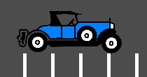
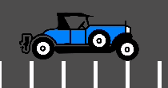

Khắc phục jitter, stutter và độ trễ input
Jitter, stutter và độ trễ input là gì?
Jitter (rung giật) và stutter (khựng hình) là hai kiểu biến dạng khác nhau đối với chuyển động hiển thị của các đối tượng trên màn hình, có thể ảnh hưởng đến game ngay cả khi game chạy ở tốc độ tối đa. Những hiệu ứng này dễ thấy nhất trong các game mà thế giới di chuyển với tốc độ không đổi theo một hướng cố định, như game chạy vô tận (runner) hoặc game đi cảnh (platformer).
Độ trễ input (input lag) không liên quan đến jitter và stutter, nhưng đôi khi được bàn đến cùng nhau. Độ trễ input là độ trễ có thể nhìn thấy trên màn hình khi thực hiện thao tác bằng chuột, bàn phím, tay cầm hoặc màn hình cảm ứng. Nó có thể liên quan đến code game, code engine hoặc các yếu tố bên ngoài (như phần cứng). Độ trễ input dễ nhận thấy nhất trong các game dùng chuột để ngắm, như game góc nhìn thứ nhất. Không thể loại bỏ hoàn toàn độ trễ input, nhưng có thể giảm nó theo nhiều cách.
Phân biệt jitter và stutter
Một game chạy ở framerate bình thường mà không có hiệu ứng nào sẽ trông mượt mà:

Một game bị jitter sẽ rung liên tục một cách rất tinh tế:

Cuối cùng, một game bị stutter sẽ trông mượt mà, nhưng cứ vài giây lại như bị dừng lại hoặc lùi lại một frame:

Jitter
Jitter có thể có nhiều nguyên nhân. Nguyên nhân điển hình nhất xảy ra khi tần số vật lý của game (thường là 60 Hz) chạy ở độ phân giải khác với tần số làm mới của màn hình. Hãy kiểm tra xem tần số làm mới màn hình của bạn có khác 60 Hz hay không.
Đôi khi, chỉ một số đối tượng bị jitter (nhân vật hoặc nền). Điều này xảy ra khi chúng được xử lý theo các nguồn thời gian khác nhau (một đối tượng được xử lý ở bước vật lý, trong khi đối tượng khác được xử lý ở bước idle).
Nguyên nhân jitter này có thể được giảm bớt bằng cách bật nội suy vật lý trong Project Settings. Nội suy vật lý sẽ làm mượt các cập nhật vật lý bằng cách nội suy transform của các đối tượng vật lý giữa các frame vật lý. Nhờ vậy, hình ảnh của các đối tượng vật lý sẽ luôn trông mượt mà bất kể framerate và tần số tick vật lý.
Việc bật nội suy vật lý có một số lưu ý bạn nên biết. Ví dụ, cần cẩn thận khi dịch chuyển tức thời (teleport) đối tượng để chúng không bị nội suy một cách rõ ràng giữa vị trí cũ và vị trí mới khi không mong muốn. Xem tài liệu Nội suy vật lý để biết chi tiết.
Ghi chú
Bật nội suy vật lý sẽ làm tăng độ trễ input cho những hành vi phụ thuộc vào tick vật lý, chẳng hạn như chuyển động của người chơi. Trong hầu hết các game, điều này thường vẫn tốt hơn jitter, nhưng hãy cân nhắc kỹ với các game chạy ở framerate cố định (như game đối kháng hoặc game nhịp điệu). Mức tăng độ trễ input này có thể được bù lại bằng cách tăng tần số tick vật lý như mô tả trong phần Độ trễ input.
Stutter
Stutter có thể xảy ra do nhiều nguyên nhân khác nhau. Một nguyên nhân là game không thể duy trì framerate đầy đủ do nghẽn CPU hoặc GPU. Cách giải quyết tùy thuộc vào từng game và sẽ cần tối ưu hóa.
Một nguyên nhân phổ biến khác gây stutter là stutter do biên dịch shader. Hiện tượng này xảy ra khi cần biên dịch shader lúc một material hoặc hiệu ứng hạt mới xuất hiện lần đầu tiên trong game. Kiểu stutter này thường chỉ xảy ra ở lần chơi đầu tiên, hoặc sau khi cập nhật driver đồ họa khiến bộ nhớ đệm shader bị vô hiệu.
Kể từ Godot 4.4, khi dùng trình kết xuất Forward+ hoặc Mobile, engine sẽ cố gắng tránh stutter do biên dịch shader bằng cách tiếp cận ubershader. Để cách tiếp cận này hiệu quả nhất, cần cẩn thận khi thiết kế scene và resource để Godot có thể thu thập càng nhiều thông tin càng tốt lúc scene/resource được tải, thay vì lúc nó được vẽ lần đầu tiên. Xem Giảm giật lag do biên dịch shader (pipeline) để biết thêm thông tin.
Tuy nhiên, khi dùng trình kết xuất Compatibility, không thể dùng cách tiếp cận ubershader này do giới hạn kỹ thuật của OpenGL. Vì vậy, để tránh stutter do biên dịch shader trong trình kết xuất Compatibility, bạn cần cho xuất hiện mọi mesh và hiệu ứng hình ảnh trước camera trong một frame duy nhất khi màn chơi đang tải. Điều này đảm bảo shader được biên dịch lúc tải màn chơi, thay vì trong lúc chơi. Việc này có thể thực hiện phía sau một lớp UI 2D đặc (chẳng hạn một node class_ColorRect toàn màn hình) để người chơi không nhìn thấy.
Ghi chú
Trên các nền tảng hỗ trợ tắt V-Sync, stutter có thể ít bị chú ý hơn bằng cách tắt V-Sync trong cài đặt dự án. Tuy nhiên, điều này sẽ gây ra hiện tượng xé hình (tearing), đặc biệt trên màn hình có tần số làm mới thấp. Nếu màn hình của bạn hỗ trợ, hãy cân nhắc bật tần số làm mới thay đổi (G-Sync/FreeSync) trong khi vẫn giữ V-Sync bật. Cách này giúp giảm bớt một số dạng stutter mà không gây xé hình. Tuy nhiên, nó sẽ không giúp được với các lần stutter lớn, chẳng hạn như do biên dịch shader.
Buộc card đồ họa dùng cấu hình hiệu năng tối đa cũng có thể giúp giảm stutter, đổi lại GPU sẽ tiêu thụ nhiều điện năng hơn.
Ngoài ra, stutter có thể do chính hệ điều hành bên dưới gây ra. Dưới đây là một số thông tin về stutter trên các hệ điều hành khác nhau:
Windows
Windows được biết là gây stutter cho game chạy ở chế độ cửa sổ. Điều này chủ yếu phụ thuộc vào phần cứng đã cài đặt, phiên bản driver và các tiến trình đang chạy song song (ví dụ: mở nhiều tab trình duyệt có thể gây stutter cho game đang chạy). Để tránh điều này, Godot nâng mức ưu tiên của game lên "Above Normal". Cách này giúp ích đáng kể, nhưng có thể không loại bỏ hoàn toàn stutter.
Để loại bỏ hoàn toàn cần cấp cho game toàn quyền để trở thành "Time Critical", điều này không được khuyến khích. Một số game có thể làm vậy, nhưng bạn nên học cách chấp nhận vấn đề này, vì nó phổ biến với game trên Windows và hầu hết người dùng sẽ không chơi game ở chế độ cửa sổ (các game chơi trong cửa sổ, ví dụ game giải đố, thường cũng không gặp vấn đề này).
Ở chế độ toàn màn hình, Windows dành mức ưu tiên đặc biệt cho game nên stutter không còn thấy được và rất hiếm. Đây là cách hầu hết các game được chơi.
Khi dùng chuột có tần số polling từ 1.000 Hz trở lên, hãy cân nhắc dùng bản cài đặt Windows 11 được cập nhật đầy đủ, vốn đi kèm các bản sửa lỗi liên quan đến việc sử dụng CPU cao với chuột có tần số polling cao. Các bản sửa lỗi này không có trên Windows 10 và các phiên bản cũ hơn.
Mẹo
Game nên dùng chế độ cửa sổ Exclusive Fullscreen thay vì Fullscreen, vốn được thiết kế để ngăn Windows tự động xem cửa sổ như thể nó là toàn màn hình độc quyền.
Fullscreen dành cho các ứng dụng GUI muốn dùng độ trong suốt theo từng pixel mà không có nguy cơ bị hệ điều hành tắt đi. Nó làm được điều này bằng cách chừa lại một dòng 1 pixel ở cạnh dưới màn hình. Ngược lại, Exclusive Fullscreen dùng kích thước màn hình thực tế và cho phép Windows giảm jitter và độ trễ input cho game toàn màn hình.
Linux
Stutter có thể xuất hiện trên Linux desktop, nhưng điều này thường liên quan đến các driver video và compositor khác nhau. Một số compositor cũng có thể gây ra vấn đề này (ví dụ KWin), vì vậy bạn nên thử dùng compositor khác để loại trừ nguyên nhân. Một số trình quản lý cửa sổ như KWin và Xfwm cho phép bạn tắt compositing thủ công, việc này có thể cải thiện hiệu năng (đổi lại sẽ bị xé hình).
Không có cách khắc phục stutter do driver hoặc compositor, ngoài việc báo cáo lỗi cho nhà phát triển driver hoặc compositor. Stutter có thể xuất hiện nhiều hơn khi chơi ở chế độ cửa sổ so với toàn màn hình, ngay cả khi đã tắt compositing.
Feral GameMode có thể được dùng để tự động áp dụng các tối ưu hóa (chẳng hạn buộc GPU dùng cấu hình hiệu năng) khi chạy các tiến trình cụ thể.
macOS
Nhìn chung, macOS không bị stutter, mặc dù gần đây có một số lỗi được báo cáo khi chạy toàn màn hình (đây là lỗi của macOS). Nếu máy của bạn gặp hiện tượng này, hãy cho chúng tôi biết.
Android
Nhìn chung, Android không bị stutter và jitter vì activity đang chạy được ưu tiên hoàn toàn. Tuy vậy, vẫn có thể có những thiết bị gặp vấn đề (Kindle Fire đời cũ là một ví dụ đã biết). Nếu bạn gặp vấn đề này trên Android, hãy cho chúng tôi biết.
iOS
Thiết bị iOS nhìn chung không bị stutter, nhưng các thiết bị cũ chạy phiên bản hệ điều hành mới hơn có thể gặp vấn đề. Điều này thường không thể tránh khỏi.
Độ trễ input
Cấu hình dự án
Trên các nền tảng hỗ trợ tắt V-Sync, độ trễ input có thể ít bị chú ý hơn bằng cách tắt V-Sync trong cài đặt dự án. Tuy nhiên, điều này sẽ gây ra hiện tượng xé hình, đặc biệt trên màn hình có tần số làm mới thấp. Bạn nên cung cấp V-Sync như một tùy chọn để người chơi bật/tắt.
Khi dùng phương thức kết xuất Forward+ hoặc Mobile, một cách khác để giảm độ trễ hình ảnh khi bật V-Sync là dùng V-Sync bộ đệm đôi (double-buffered) thay vì V-Sync bộ đệm ba (triple-buffered) mặc định. Kể từ Godot 4.3, bạn có thể làm điều này bằng cách giảm cài đặt dự án Display > Window > V-Sync > Swapchain Image Count xuống 2. Nhược điểm của bộ đệm đôi là framerate sẽ kém ổn định hơn nếu không đạt được tần số làm mới của màn hình do nghẽn CPU hoặc GPU. Ví dụ, trên màn hình 60 Hz, nếu framerate thường giảm xuống 55 FPS trong lúc chơi với bộ đệm ba, thì với bộ đệm đôi nó sẽ phải tạm thời giảm xuống 30 FPS (rồi quay lại 60 FPS khi có thể). Do đó, V-Sync bộ đệm đôi chỉ được khuyến nghị nếu bạn có thể liên tục đạt tần số làm mới của màn hình trên phần cứng mục tiêu.
Tăng số lần lặp vật lý mỗi giây cũng có thể giảm độ trễ input do vật lý gây ra. Điều này đặc biệt rõ khi dùng nội suy vật lý (giúp mượt hơn nhưng tăng độ trễ). Để làm vậy, hãy đặt Physics > Common > Physics Ticks Per Second thành giá trị cao hơn mặc định 60, hoặc đặt Engine.physics_ticks_per_second lúc runtime trong script. Các giá trị là bội số của tần số làm mới màn hình (thường là 60) hoạt động tốt nhất khi tắt nội suy vật lý, vì chúng sẽ tránh được jitter. Điều này có nghĩa là các giá trị như 120, 180 và 240 là điểm khởi đầu tốt. Thêm vào đó, FPS vật lý cao hơn giúp giảm khả năng xảy ra hiện tượng xuyên vật thể (tunneling) và mất ổn định vật lý.
Nhược điểm của việc tăng FPS vật lý là mức sử dụng CPU sẽ tăng, có thể gây nghẽn hiệu năng trong các game có code mô phỏng vật lý nặng. Có thể giảm bớt điều này bằng cách chỉ tăng FPS vật lý trong những tình huống mà độ trễ thấp là quan trọng, hoặc cho phép người chơi điều chỉnh FPS vật lý cho phù hợp với phần cứng của họ. Tuy nhiên, FPS vật lý khác nhau sẽ dẫn đến kết quả mô phỏng vật lý khác nhau, ngay cả khi delta được dùng nhất quán trong logic game. Điều này có thể khiến một số người chơi có lợi thế hơn người khác. Vì vậy, nên tránh cho phép người chơi tự thay đổi FPS vật lý trong các game nhiều người chơi mang tính cạnh tranh.
Cuối cùng, bạn có thể tắt việc gom đệm input theo từng frame được kết xuất bằng cách gọi Input.set_use_accumulated_input(false) trong script. Khi đó, các hàm _input() và _unhandled_input() trong script của bạn sẽ được gọi ở mọi input, thay vì gom các input lại và chờ một frame được kết xuất. Tắt việc gom input sẽ làm tăng mức sử dụng CPU, vì vậy cần thận trọng khi làm điều này.
Mẹo
Trên bất kỳ dự án Godot nào, bạn có thể dùng tham số dòng lệnh --disable-vsync để buộc tắt V-Sync. Kể từ Godot 4.2, --max-fps <fps> cũng có thể được dùng để đặt giới hạn FPS (0 là không giới hạn). Có thể dùng đồng thời các tham số này.
Theo phần cứng/hệ điều hành
Nếu màn hình của bạn hỗ trợ, hãy cân nhắc bật tần số làm mới thay đổi (G-Sync/FreeSync) trong khi vẫn giữ V-Sync bật, sau đó giới hạn framerate trong cài đặt dự án ở mức thấp hơn một chút so với tần số làm mới tối đa của màn hình, theo trang này.
Thoạt đầu điều này có vẻ phản trực giác, nhưng giới hạn FPS dưới dải tần số làm mới tối đa đảm bảo hệ điều hành không bao giờ phải chờ khoảng trống dọc (vertical blanking) kết thúc. Điều này cho độ trễ input tương tự như khi tắt V-Sync với cùng giới hạn framerate (thường chỉ cao hơn chưa tới 1 ms), nhưng không hề bị xé hình.
Công thức dùng để xác định giới hạn framerate là refresh - (refresh * refresh / 3600.0), trong đó refresh là tần số làm mới của màn hình tính bằng Hz. Bảng sau cho biết giới hạn framerate nên dùng cho các tần số làm mới phổ biến (giới hạn được làm tròn xuống số nguyên gần nhất):
Tần số làm mới |
Giới hạn framerate |
|---|---|
60 Hz |
58 FPS |
75 Hz |
73 FPS |
120 Hz |
115 FPS |
144 Hz |
138 FPS |
165 Hz |
157 FPS |
240 Hz |
224 FPS |
360 Hz |
324 FPS |
480 Hz |
416 FPS |
Giới hạn framerate này có thể được đặt bằng cách thay đổi cài đặt dự án Application > Run > Max FPS hoặc gán Engine.max_fps lúc runtime trong script. Ở tần số làm mới cao hơn, cần giới hạn thấp hơn để đảm bảo sai số thời gian không khiến màn hình kích hoạt V-Sync (việc này sẽ làm tăng độ trễ input).
Trên một số nền tảng, bạn cũng có thể bật chế độ độ trễ thấp trong tùy chọn driver đồ họa (chẳng hạn NVIDIA Control Panel trên Windows). Cài đặt Ultra sẽ cho độ trễ thấp nhất có thể, đổi lại framerate trung bình sẽ thấp hơn một chút. Buộc GPU dùng cấu hình hiệu năng tối đa cũng có thể giảm thêm độ trễ input, đổi lại sẽ tiêu thụ nhiều điện năng hơn (và kèm theo nhiệt/tiếng ồn quạt).
Cuối cùng, hãy đảm bảo màn hình của bạn đang chạy ở tần số làm mới cao nhất có thể trong cài đặt hiển thị của hệ điều hành.
Ngoài ra, hãy đảm bảo chuột của bạn được cấu hình để dùng tần số polling cao nhất (thường là 1.000 Hz với chuột gaming, đôi khi cao hơn). Tuy nhiên, tần số polling USB cao có thể khiến mức sử dụng CPU cao, vì vậy 500 Hz có thể là lựa chọn an toàn hơn với CPU cấu hình thấp. Nếu chuột của bạn có nhiều mức DPI, hãy cân nhắc dùng mức cao nhất có thể và giảm độ nhạy trong game để giảm độ trễ chuột.
Trên Linux khi dùng X11, tắt compositing trong các trình quản lý cửa sổ cho phép điều đó (như KWin hoặc Xfwm) có thể giảm đáng kể độ trễ input.
Báo cáo vấn đề jitter, stutter hoặc độ trễ input
Nếu bạn báo cáo vấn đề stutter hoặc jitter (mở issue) không do bất kỳ nguyên nhân nào ở trên gây ra, hãy nêu thật rõ mọi thông tin có thể về thiết bị, hệ điều hành, phiên bản driver, v.v. Điều này có thể giúp khắc phục sự cố tốt hơn.
Nếu bạn báo cáo vấn đề độ trễ input, hãy kèm theo một đoạn ghi hình bằng camera tốc độ cao (chẳng hạn chế độ quay chậm trên điện thoại). Đoạn ghi hình phải thấy được cả màn hình và thiết bị input để có thể đếm số frame giữa một input và kết quả trên màn hình. Ngoài ra, hãy nhớ nêu tần số làm mới của màn hình và tần số polling của thiết bị input (đặc biệt là chuột).
Ngoài ra, hãy dùng đúng thuật ngữ (jitter, stutter, độ trễ input) dựa trên hành vi quan sát được. Điều này sẽ giúp hiểu vấn đề của bạn nhanh hơn nhiều. Hãy cung cấp một dự án có thể dùng để tái hiện vấn đề, và nếu có thể, kèm theo một đoạn quay màn hình minh họa lỗi.